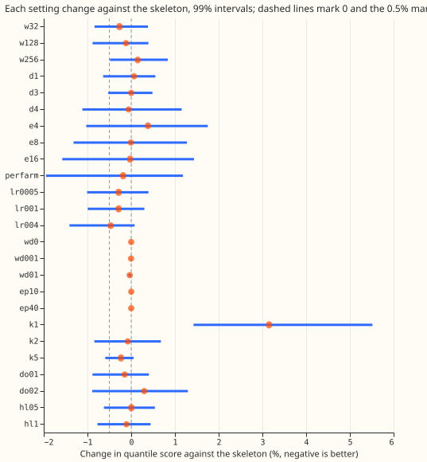
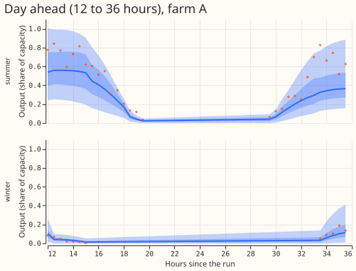

Does changing any one setting of the neural network for the six metered solar farms improve its quantile score by 0.5%?
Changing any one setting of the neural network that forecasts solar output did not improve its forecast by the 0.5% margin we required. One neural network is trained on all six metered solar farms at once (labelled A to F). For each half-hour it outputs a probability distribution of the farm's output, as a fraction of the farm's capacity, from the 51-member ensemble weather forecast of the European Centre for Medium-Range Weather Forecasts. Experiment 430 found that adding inputs or components to this network improved its score by 0.4% at most (a clear-sky column). We therefore left the design alone and changed 25 settings one at a time, comparing each against the unchanged network (the "reference network") on the quantile score, which measures how well the whole distribution matches the observed output (lower is better). The settings were the network's width, depth, farm embedding (a learned vector per farm), learning rate, weight decay, number of training epochs, number of Gaussian curves in the output distribution, dropout, and a weight that favours recent training rows. No change passed, so the random search that the plan reserved for a positive result was not run.
The best change, a learning rate of 4e-3, shrank from 0.47% to 0.14% on fresh seeds, and both intervals span zero. The learning rate of 4e-3 scored 0.47% better on the three screening seeds (a seed fixes the starting weights and the batch order) (99% interval −1.41% to +0.08%), and 0.14% better on three fresh seeds (−0.74% to +0.55%). The fresh-seed check was run after the results were read (post hoc), on this one arm. The minimum detectable effect from seed noise is 0.40% at three seeds, so a screening gain of 0.47% is barely above the seed noise. One mixture component is the only clear change, and it is worse: 3.15% worse (+1.43% to +5.52%), with a 0.99 pinball loss (the loss at the quantile that 99% of outcomes fall below) 0.077 points higher.

Figure 1. Percentage change in the farm-equal quantile score of each arm against experiment 430's
g0_onepass, over all day bands, three seeds, with 99% month-block intervals. Negative is better.
The dashed lines mark 0 and the −0.5% margin.
Results
Scores are quantile scores in points of capacity (twice the mean pinball loss over 11 levels; lower
is better), farm-equal means over experiment 430's scored year (2025-09 to 2026-08), 410,899 rows,
all day bands, seeds 0 to 2 for every arm and for the skeleton. The "skeleton" (the reference
network) is experiment 430's
g0_onepass, read from its stored predictions. The 0.01 and 0.99 pinball losses are row-pooled
differences in points of capacity.
| Arm | Change | Score | Change vs skeleton (99% interval) | 0.01 / 0.99 pinball vs skeleton |
|---|---|---|---|---|
g0_onepass |
skeleton | 6.842 | ||
w32 |
width 32 | 6.824 | -0.27% (-0.84% to +0.38%) | -0.0032 / +0.0006 |
w128 |
width 128 | 6.834 | -0.12% (-0.88% to +0.39%) | -0.0019 / +0.0046 |
w256 |
width 256 | 6.853 | +0.15% (-0.49% to +0.84%) | -0.0027 / +0.0087 |
d1 |
1 hidden layer | 6.847 | +0.07% (-0.64% to +0.55%) | -0.0019 / -0.0046 |
d3 |
3 hidden layers | 6.842 | +0.00% (-0.53% to +0.48%) | -0.0030 / +0.0049 |
d4 |
4 hidden layers | 6.838 | -0.06% (-1.12% to +1.16%) | -0.0032 / +0.0085 |
e4 |
farm embedding 4 | 6.869 | +0.38% (-1.03% to +1.75%) | -0.0028 / -0.0071 |
e8 |
farm embedding 8 | 6.842 | -0.01% (-1.32% to +1.27%) | -0.0041 / -0.0064 |
e16 |
farm embedding 16 | 6.841 | -0.03% (-1.58% to +1.44%) | -0.0034 / -0.0045 |
perfarm |
one network per farm | 6.830 | -0.18% (-1.95% to +1.18%) | -0.0138 / -0.0028 |
lr0005 |
learning rate 5e-4 | 6.823 | -0.29% (-1.01% to +0.40%) | -0.0023 / +0.0065 |
lr001 |
learning rate 1e-3 | 6.823 | -0.29% (-0.99% to +0.30%) | -0.0021 / +0.0071 |
lr004 |
learning rate 4e-3 | 6.810 | -0.47% (-1.41% to +0.08%) | -0.0017 / +0.0061 |
wd0 |
weight decay 0 | 6.842 | +0.00% (+0.00% to +0.00%) | +0.0000 / +0.0000 |
wd001 |
weight decay 1e-3 | 6.842 | -0.00% (-0.01% to -0.00%) | -0.0000 / -0.0000 |
wd01 |
weight decay 1e-2 | 6.840 | -0.03% (-0.06% to -0.01%) | -0.0000 / -0.0000 |
ep10 |
10 epochs | 6.842 | +0.00% (-0.00% to +0.00%) | +0.0000 / +0.0000 |
ep40 |
40 epochs | 6.842 | -0.00% (-0.00% to +0.00%) | +0.0000 / +0.0000 |
k1 |
1 mixture component | 7.058 | +3.15% (+1.43% to +5.52%) | +0.0007 / +0.0773 |
k2 |
2 components | 6.837 | -0.08% (-0.84% to +0.68%) | -0.0013 / +0.0084 |
k5 |
5 components | 6.826 | -0.23% (-0.59% to +0.06%) | +0.0008 / -0.0020 |
do01 |
dropout 0.1 | 6.832 | -0.15% (-0.89% to +0.41%) | -0.0024 / +0.0027 |
do02 |
dropout 0.2 | 6.863 | +0.30% (-0.89% to +1.30%) | -0.0029 / +0.0063 |
hl05 |
recency half-life 0.5 year | 6.843 | +0.00% (-0.62% to +0.54%) | -0.0027 / +0.0025 |
hl1 |
recency half-life 1 year | 6.835 | -0.11% (-0.77% to +0.44%) | -0.0017 / -0.0002 |
- No level passed the rule. The rule needs a gain of at least 0.5%, a 99% interval that excludes zero on the favourable side, and no tail harm above 0.02 points. The lowest point estimate is −0.47% (learning rate 4e-3), and its interval reaches +0.08%.
- Two weight-decay arms have intervals that exclude zero, on a gain of 0.003% to 0.03%. The weight-decay intervals are narrow because the arms barely differ from the skeleton, and the gain is far under the margin.
- Training length changes nothing because the best epoch is early. The 10-epoch and 40-epoch arms score the same as the 20-epoch skeleton to 13 decimal places. A rerun of the seed-0 skeleton for 40 epochs with a logged validation curve picked epoch 3 at three refits and epoch 2 at the fourth. The validation loss (the mean negative log-likelihood on the last 61 days of training rows; lower is better) then rises steadily: for the first refit it is −0.72 at the best epoch and −0.48 at epoch 40. Weight decay at 1e-4 to 1e-2 and a learning rate under 4e-3 change little because training stops improving after 2 or 3 epochs.
- The embedding arms are no better, and the per-farm arm is no better than the pooled one. The per-farm networks score 0.18% better (−1.95% to +1.18%) with the widest interval of all arms.
- The lower tail is under-covered in every arm, and only one mixture component changes the tails. Coverage of the 0.01 quantile is 5.2% to 5.5% in every arm (target 1%), and coverage of the 0.99 quantile is 98.1% to 99.2% (target 99%). Dropout 0.2 moves the 0.99 coverage to 99.2%.
- Example forecasts of the skeleton are in Figures 2 and 3.

Figure 2. The skeleton's forecast of farm A for the 12 to 36 hours after a summer run and a winter run (three-seed average). Bands show the 25% to 75% and 5% to 95% quantiles; dots are the observed output.

Figure 3. The same two runs over days 1 to 10.
Checks
- Median minus mean forecast, per farm (points of capacity, seeds 0 to 2): the skeleton's median sits 0.45 to 0.83 above its mean at the six farms. The learning rate 4e-3 arm gives 0.13 to 0.74, width 32 gives 0.39 to 0.73, and one mixture component gives −0.06 to +0.07. One component forces a symmetric distribution, so its median and mean agree, and its score is the worst.
- Error of the mean forecast beside the score: for learning rate 4e-3, the mean absolute error of the mean forecast is lower than the skeleton's at all six farms, as is the quantile score, so the two agree. For one mixture component, the mean absolute error is higher at five farms and the score is higher at all six.
- Audit triggers. Trigger 5 (a control that should change nothing moves the score by more than its own interval's half-width) fires weakly. The two weight-decay arms move by 0.003% and 0.03%, more than their narrow half-widths of 0.003% and 0.02%, and the best-epoch curve above explains why they differ at all. Width 32 and two mixture components score slightly better than the reference network that contains them (−0.27% and −0.08%), with intervals that include zero. Trigger 6 (interval width against a sister experiment) is borderline: the embedding, per-farm, 4-layer, and 1-component arms have half-widths of 1.1% to 2.1%, against about 0.5% to 0.65% for the others, because their forecasts differ more from the reference network. The other triggers did not fire. No control or placebo exists. The result agrees with its prediction. A leave-one-farm-out check was not run, because no contrast is a candidate for adoption. The numbers review (a fresh Sonnet agent that re-derived the contrasts with its own code) matched every table row.
- Minimum detectable effect. The plan took 0.40% at three seeds by scaling the spread of six skeleton seeds. The spread of seeds 0 to 2 alone gives 0.52%. The best arm's gain of 0.47% is below the margin under either value, so no verdict changes.
- Best-epoch script:
e00443_best_epoch.pyproduced the curve above, and its log is in the experiment's private data folder.
Caveats
- Each level is a single point in a coarse grid. A change of two settings together (for example a wider network with a lower learning rate) was not tested, because the plan runs a random search only after a single setting moves.
- The screen is not corrected for 25 contrasts. Each interval is a 99% interval on its own, so 25 screens are expected to produce about 0.25 false passes. None did.
- The scored year is the same year as in experiment 430, so a choice that suits another year would not show here.
- Lead range: the scored lead range is days 1 to 10 (12 to 252 hours) for the six metered solar farms; day-ahead (12 to 36 hours) is band d1.
- Weather at lag times: the farm network has no power lags, and its weather inputs are the ensemble run available at forecast time.
- Stored networks: the fitted networks are not saved (see Design); the quantile tables are in the experiment's private data folder.
What to try next
Look for solar gains in the inputs next. In this experiment the network stopped improving after 2 or 3 epochs and no single setting moved the score, although combinations of settings were not tested. Experiment 430 found a clear-sky column worth 0.4%. A better irradiance product is one input change that has not been tried.
Design
The skeleton is experiment 430's g0_onepass. It is a mixture-density network: it reads the
standardised inputs (calendar, sun position, ensemble mean and spread of shortwave radiation, and
the other columns of experiment 345's list), has two hidden layers of 64, and outputs a mixture of
three Gaussians for the farm's output as a fraction of its ceiling. It is trained with AdamW at
learning rate 2e-3, weight decay 1e-4, batch 2048, for 20 epochs with the best epoch chosen on the
last 61 days of the training rows. One network is pooled over the six farms and the six day bands
and
refitted quarterly, four refits from 2025-09. A job is one (arm, seed, refit); the stored skeleton
supplies seeds 0 to 5.
Stage 1 changes one factor at a time (25 arms, 3 seeds, 4 refits: 300 jobs).
| Factor | Skeleton level | Other levels |
|---|---|---|
| Hidden width | 64 | 32, 128, 256 |
| Depth (hidden layers) | 2 | 1, 3, 4 |
| Farm embedding width | none | 4, 8, 16, and per-farm networks (six networks, each trained on one farm only) |
| Learning rate | 2e-3 | 5e-4, 1e-3, 4e-3 |
| Weight decay | 1e-4 | 0, 1e-3, 1e-2 |
| Epochs | 20 | 10, 40 |
| Mixture components | 3 | 1, 2, 5 |
| Dropout (after each hidden layer) | 0 | 0.1, 0.2 |
| Row-recency weight (half-life of the loss weight, by the row's age at the refit) | none | 0.5 year, 1 year |
The loss-weight factor is the row-recency half-life, the one loss weight the design note lists for demand networks; no tail or pinball weight is tested.
Stage 2 (run only if a factor moved) is a random search; it was not run. 45 configurations are drawn at random from the levels of the moved factors (each other factor stays at its skeleton level), two seeds each (360 jobs). The best three by mean score are refitted on seeds 3 to 5 and judged against the skeleton's seeds 3 to 5.
Compute. Stage 1 was 300 jobs at 11 to 17 s each on the GPU, in one process under 8 GB with
MemoryMax=8G, OMP_NUM_THREADS=1, and one feeder core: about 1.2 hours.
Standing practices. The farm network follows experiment 345's quarterly refits so that the rows
match. The farm rows are experiment 310's, with its idle-band handling. The fitted networks
are not saved: a job's output is its quantile table, and the sweep's 700 networks are small enough
to refit in minutes. Stored predictions reused: experiment 430's g0_onepass seeds 0 to 5, so the
skeleton is not refitted; the gate (G0) refits one job to prove the new code reproduces it.
Scoring details. The 0.01 and 0.99 pinball differences are row-pooled means in 100 times the raw pinball loss, as in experiment 430. The per-farm arm fits one network per farm, but its input standardiser is still computed over all six farms' rows before the refit cutoff. The "embedding" factor includes the per-farm arm, so it counts as moved if the per-farm arm passes.
Gate G0. The new code with every factor at its skeleton level must reproduce the stored
g0_onepass forecasts for seed 0 and all four refits to within 1e-4 points of capacity. If it
misses, the run stops and reports.